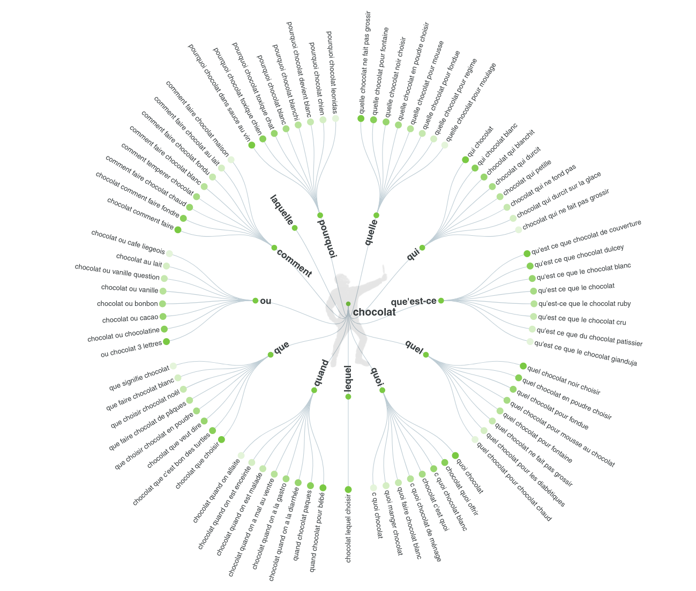

« Créer du bon contenu », « Ajoutez des mots-clés à votre page », « Assurez-vous
que votre site se charge rapidement ». Oui, ces trucs peuvent aider un peu. Mais
ça ne va pas propulser votre site en haut de la première page de Google. Si vous
voulez être classé numéro un dans Google, vous allez adorer les étapes pratiques
dans cet article.
Voici 5 étapes que vous pouvez suivre pour vous classer sur la première page de
Google.
-
Trouvez trois mots-clés
Ce sont des mots-clés autour desquels vous allez créer du contenu dans la
seconde étape.
Et voici exactement comment trouver de bons mots-clés à faible concurrence.
Vous pouvez par exemple aller sur AnswerThePublic. Cet outil gratuit trouve des
questions que les gens posent sur les forums, les blogs et les médias sociaux.
Et il transforme ces questions en mots-clés géniaux. Les mots-clés que vous
obtenez de AnswerThePublic sont généralement des mots-clés de longue traîne.

Au cas où vous n’auriez pas entendu parler d’eux avant, les mots-clés de longue
traîne sont juste des mots-clés qui sont longs et très spécifiques. Ils ne sont
pas très compétitifs, et donc des mots-clés parfaits à rechercher si vous
débutez.
Un autre bon moyen de trouver des mots-clés est, croyez-le ou non, Reddit.
Il suffit de se rendre sur un subreddit où votre public cible traîne, regardez
les sujets dont les gens parlent et piochez-les. Vous pouvez même insérer ces
sujets dans AnswerThePublic pour trouver des versions à longue traîne de ces
sujets.
Une fois que vous avez au moins trois mots-clés prêts à être utilisés, il est
temps de passer à l’étape numéro deux.
-
Créer un contenu épique
D’après une étude menée, sur 912 millions articles analysés, 94 % de ces
articles mis en ligne n’ont aucun lien et ne sont pas partagés.
Et il y a une raison simple à cela. La plupart du contenu que les gens publient
n’est pas très bon. Et s’il n’est pas génial, il va se perdre parmi les
millions d’articles, de tweets, de vidéos YouTube, et de flux Twitch qui sont
publiés chaque jour.
Donc pour que votre contenu se démarque, il ne peut pas seulement être bon, ou
même génial. Il faut qu’il soit quelque chose que quelqu’un d’autre voudrait
mettre en lien, il doit être épique.
Il n’y a pas de formule pour créer du contenu épique, sinon tout le monde le
ferait. Mais il y a quelques trucs que vous pouvez faire pour augmenter les
chances que les gens partagent et surtout, qu’ils fassent des liens vers votre
contenu.
Tout d’abord, vous devez publier du contenu long et approfondi. Cette même
étude mentionnée plus tôt a révélé une petite pépite intéressante. Cette pépite
est qu’un contenu long obtient plus de liens qu’un contenu court.
Plus précisément, le contenu long obtient en moyenne 77 % de liens retour, en
plus, que le contenu court.
Cela signifie-t-il que la publication de contenu long va automatiquement
apporter des milliers de liens ?
Bien sûr que non. Mais publier un contenu approfondi qui couvre un sujet entier
en profondeur peut augmenter les chances que les gens créent des liens vers
vous.
Ensuite, vous devez ajouter une accroche à votre contenu. Une accroche est
quelque chose qui inciterait un blogueur ou un journaliste à faire un lien vers
votre contenu.
Votre accroche peut être une statistique, un exemple d’étude de cas, une
stratégie unique, une interview rare, un outil ou un gadget, ou même une
visualisation. En gros, tout ce qui fait que quelqu’un d’autre dise, « wôw, je
dois faire un lien vers ça », peut fonctionner.
Maintenant que votre contenu épique est prêt à être utilisé, il est temps de
passer à l’étape numéro trois.
-
Optimiser votre contenu avec des mots-clés
L’objectif du référencement sur page aujourd’hui est de donner à Google un
contexte sur ce qu’est votre page.
Oui, vous voulez toujours utiliser des mots-clés sur votre page. Mais vous
devez aussi aider Google à comprendre le sujet général de votre page.
Voici comment procéder.
La première étape consiste à inclure votre mot-clé cible à quelques endroits
importants de votre page. De cette façon, Google peut comprendre que votre page
porte sur ce terme spécifique. Plus précisément, vous voulez ajouter votre
mot-clé à ces endroits de votre page.
Ensuite, il est temps de donner à Google plus de contexte sur votre page à
l’aide des mots-clés LSI. Les mots-clés LSI sont des mots et des phrases qui
sont étroitement liés à votre mot-clé cible. En d’autres termes, il s’agit de
termes qui ont tendance à apparaître à côté de votre mot-clé sur le Web.

Par exemple, si votre mot-clé cible était « image », les mots-clés LSI seraient
des termes comme « image de naruto », « image de fleur ». Et quand Google voit
ces mots-clés LSI sur votre page, il se dit que nous sommes convaincus que
cette page traite effectivement de ce sujet.
Vous pouvez trouver ces mots-clés LSI en recherchant votre mot-clé et en
faisant défiler les résultats jusqu’au bas des résultats de la recherche.
Maintenant, plongeons dans l’étape numéro quatre.
-
Optimisez votre contenu pour les utilisateurs
À l’époque, Google classait les pages en se basant presque à 100 % sur qui
avait le plus de backlinks. Pour être classé dans Google aujourd’hui, les liens
retour ne suffisent pas. Votre contenu doit également être optimisé pour les
utilisateurs.
En effet, Google accorde une attention toute particulière à la façon dont les
internautes interagissent avec votre site dans les résultats de recherche.
S’ils remarquent que les internautes cliquent sur votre site puis retournent
rapidement sur Google, ils vous déclasseront. Cependant s’ils voient que les
utilisateurs restent sur votre page, c’est un signe que vous donnez aux
chercheurs de Google ce qu’ils veulent.
Et c’est génial ! Et voici comment optimiser votre contenu pour les
utilisateurs afin qu’ils restent sur votre page.
-
Structurez votre contenu de sorte que les gens commencent à obtenir des
informations exploitables dès que possible
- Assurez-vous que la conception de votre contenu est au point
-
Les Backlinks
Perficient Digital a suivi l’importance des backlinks au cours des trois
dernières années. Et ils ont trouvé que ces liens sont fondamentalement aussi
importants aujourd’hui qu’ils l’étaient depuis qu’ils ont commencé à les
suivre.
Et si vous suivez les étapes jusqu’ici en créant un contenu épique, en
l’optimisant pour les utilisateurs, et en ajoutant des accroches, vous avez
déjà une base solide pour construire des backlinks.
C’est juste une question d’obtenir votre contenu ailleurs pour construire
réellement ces liens. Et vous pouvez utiliser la méthode des liens brisés pour
le faire.
Maintenant, avant de conclure ce tutoriel sur le référencement SEO, je veux
vous montrer une étape bonus rapide
-
Optimiser votre contenu pour les utilisateurs
Les gens de Reboot Online ont mené une expérience intéressante. Ils ont créé 10
sites Web entièrement nouveaux, tous optimisés autour d’un mot-clé qu’ils ont
choisi pour l’expérience. Sur cinq des sites, ils ont utilisé cinq photos de
stock qui étaient déjà utilisées sur un tas d’autres sites Web. Et pour les
cinq autres, ils ont pris leurs propres images, de cette façon elles étaient
100 % uniques.
Qu’ont-ils trouvé ?
Ils ont découvert que les cinq sites Web qui avaient des images uniques
surclassent les sites qui n’ont pas utilisé d’images uniques. Alors, quelle est
la conclusion ?
Chaque fois que vous le pouvez, essayez d’utiliser des images uniques dans
votre contenu. Il peut s’agir de photos que vous prenez avec votre téléphone.
Ou des illustrations que vous réalisez dans Photoshop. Ou des captures d’écran
que vous prenez vous-même.
Comme le montre cette étude, les images uniques semblent avoir un impact direct
sur les classements.